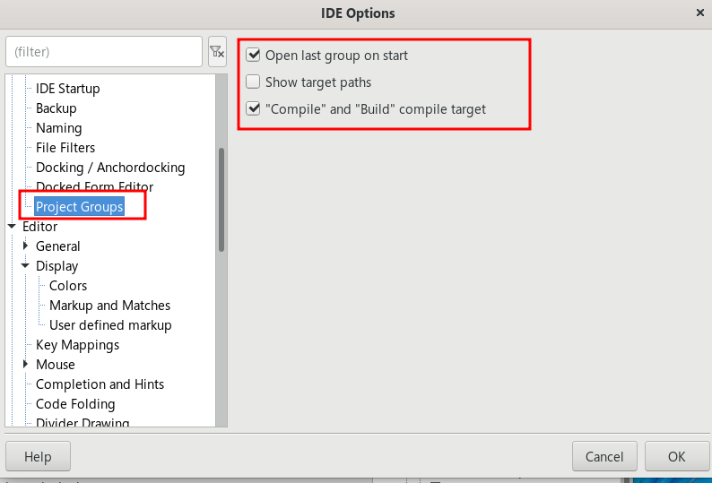
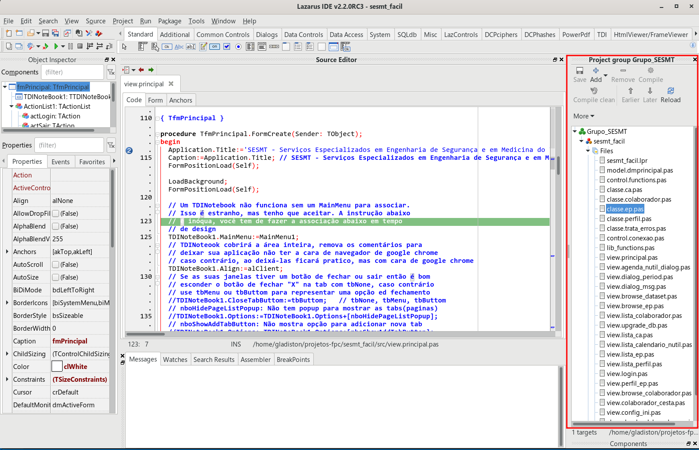
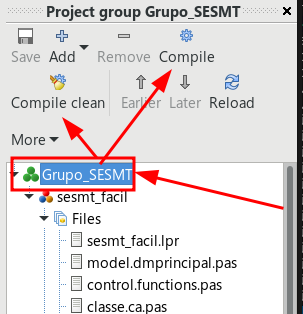

O que é um Grupo de Projetos?
Por padrão, o Lazarus abre apenas um projeto por vez. O recurso de Grupo de Projetos permite agrupar múltiplos binários (executáveis, bibliotecas, serviços) sob uma única visualização, facilitando a edição e compilação em massa.
Recomendação técnica: Utilize este recurso a partir da versão 2.2 do Lazarus, onde o Project Manager está estável e substitui com vantagens o antigo Project Inspector.
Configurando o Ambiente
Antes de iniciar, certifique-se de ter o pacote Project Manager instalado. Em seguida, ajuste as preferências em Tools | Options | Environment | Project Groups:

Ative as opções Open last group on start e Compile and build compile target para máxima produtividade.
Gerenciamento e Compilação
Ao criar um novo grupo (Project | New project group), você terá acesso a um painel que pode ser docado na lateral da IDE, organizando visualmente todos os seus projetos ativos.

Diferente do Project Inspector, aqui você pode executar comandos em massa para todo o grupo, como Compile (Compilar todos) e Complete Clean (Limpar resíduos de compilação de todos os projetos).

Vídeo Tutorial
Assista ao vídeo abaixo para uma demonstração visual de como organizar seus projetos e otimizar o fluxo de compilação:
Produtividade com IDE Lazarus: Usando grupo de projetos
ASSISTIR VÍDEO NO YOUTUBEDownload para Uso Local
Acesse o conteúdo original e assets para sincronização local:
Conclusão
O Project Group é a escolha ideal para desenvolvedores que precisam alternar rapidamente entre diferentes camadas de um software (como Client/Server). No Lazarus 2.2+, ele também organiza os arquivos de forma mais coerente, priorizando o arquivo do projeto e DataModules, o que torna a navegação muito mais intuitiva.